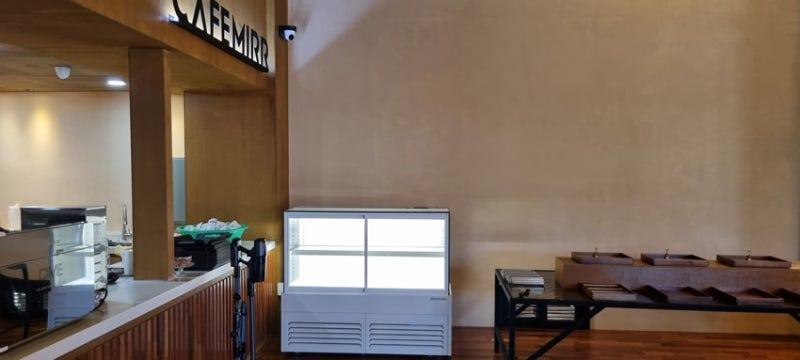
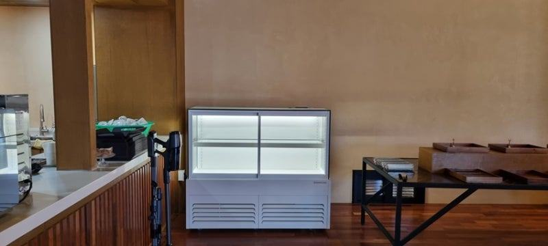
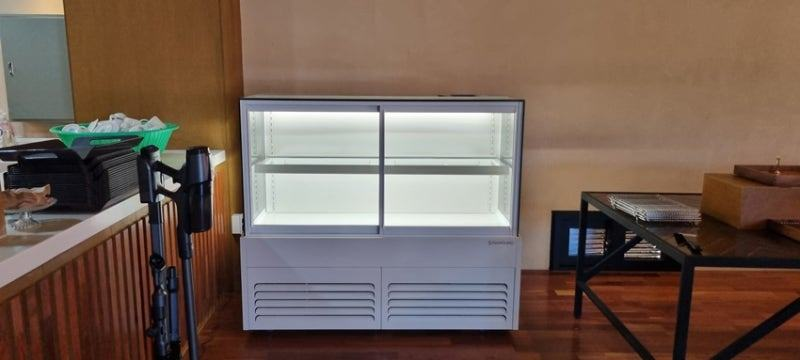
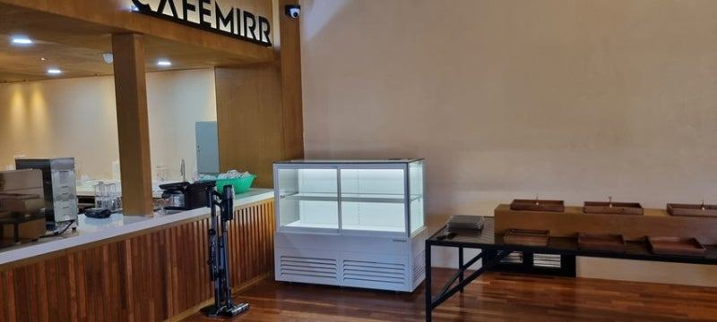
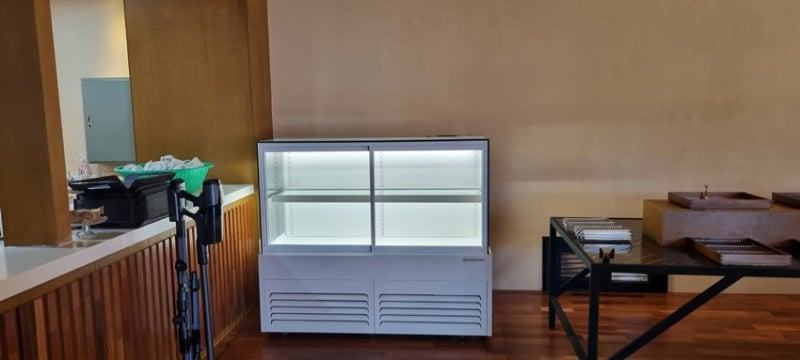
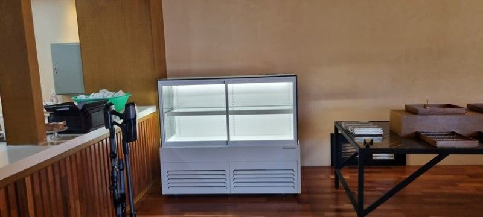
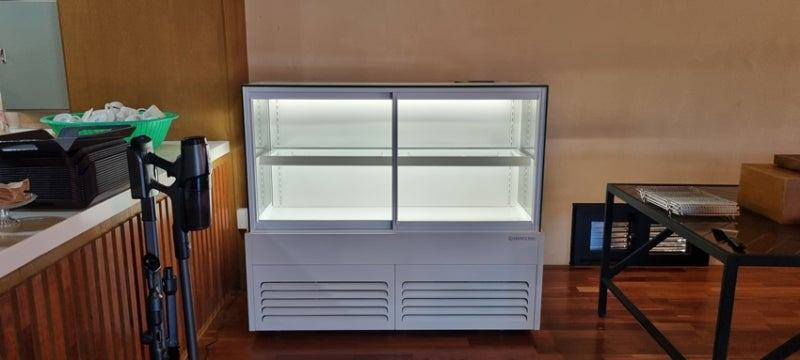
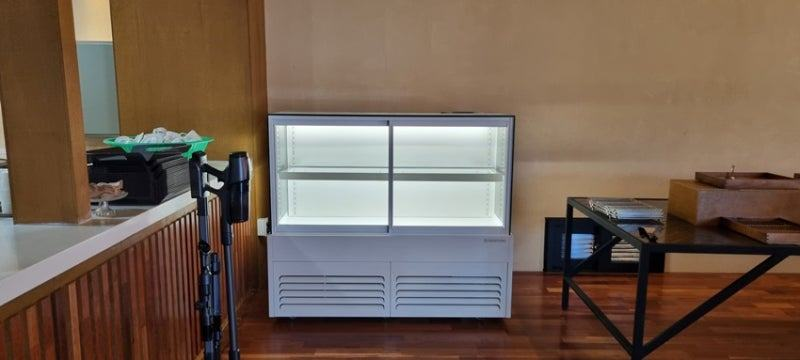
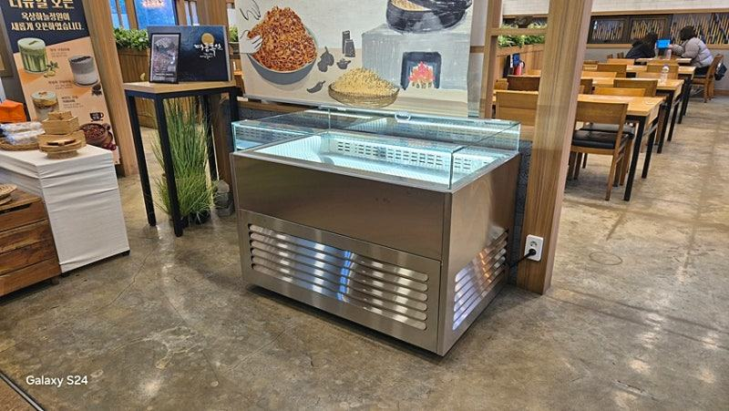

반찬(진열)쇼케이스
반찬쇼케이스 결로·김서림, 반찬가게에서 생기는 원인과 해결

반찬쇼케이스 결로는 대부분 덜 식은 반찬을 바로 넣거나, 국물 반찬을 뚜껑 없이 두거나, 문이 오래 열려 있어 습한 공기가 들어오는 데서 시작됩니다. 반찬을 식혀 넣고 진열 습관을 바꿨는데도 유리에 물이 계속 맺히면 문 패킹과 온도 유지 상태를 점검받으셔야 합니다.
안녕하세요. 반찬가게 매장에 맞춘 진열 쇼케이스를 설계하고 만드는 한성쇼케이스입니다.
아침에 정성껏 만든 반찬을 가지런히 담아 두었는데, 점심 무렵 쇼케이스 유리가 뿌옇게 흐려져 반찬이 잘 안 보인다는 고민을 자주 듣습니다.
손님은 유리 너머로 반찬 색과 윤기를 보고 고르시는데, 김이 서리면 그 장점이 다 가려지죠.
반찬가게는 다른 업종보다 결로가 생기기 쉬운 조건이 많습니다. 하루에도 여러 번 새 반찬을 채우고, 국물 있는 반찬과 따뜻한 반찬이 함께 들어가기 때문입니다.
오늘은 반찬쇼케이스에 결로가 생기는 원인을 반찬가게 상황에 맞춰 나눠 보고, 매장에서 바로 해 볼 수 있는 해결 방법을 정리해 드리겠습니다.
1. 덜 식은 반찬이 만드는 김
갓 볶은 나물이나 조림을 조금이라도 빨리 진열하려고 따뜻한 상태로 넣는 경우가 많습니다. 이때 반찬에서 올라온 수증기가 차가운 유리와 만나면서 안쪽에 물방울이 맺힙니다.
내부 온도도 함께 올라가서 쇼케이스는 다시 온도를 내리려고 더 오래 가동되고, 그 사이 다른 반찬까지 영향을 받습니다.
주방에서 충분히 식힌 뒤 진열하는 것만으로도 김서림이 눈에 띄게 줄어듭니다.
- 새로 만든 반찬은 주방에서 식힌 뒤 진열하세요.
- 한 번에 여러 통을 넣기보다 나눠서 채우세요.
2. 국물 반찬과 뚜껑 습관
물김치, 장아찌, 국물 있는 조림은 표면에서 계속 수분이 올라옵니다. 뚜껑이나 랩 없이 오래 두면 쇼케이스 안 습도가 높아져 유리 전체에 김이 서리기 쉽습니다.
국물 반찬은 뚜껑이 있는 용기에 담거나, 냉기가 나오는 자리에서 조금 떨어진 칸에 두는 것이 좋습니다.
마른 반찬과 국물 반찬을 칸으로 나누면 결로도 줄고 진열도 한결 정돈돼 보입니다.


3. 문 여닫는 시간과 매장 습도
반찬쇼케이스는 직원이 뒤쪽 문으로 반찬을 꺼내 담는 일이 많습니다. 손님 주문을 받는 동안 문을 열어 둔 채로 있으면 매장의 습하고 따뜻한 공기가 그대로 들어가 결로와 성에의 원인이 됩니다.
시장 안 매장이나 주방과 매장이 붙어 있는 구조라면 실내 습도 자체가 높습니다. 조리 중에는 환기를 충분히 하고, 쇼케이스 주변에 밥솥이나 국 끓이는 기기를 두지 않는 것만으로도 차이가 납니다.
- 반찬을 담을 때는 필요한 만큼만 열고 바로 닫으세요.
- 쇼케이스 옆에 열과 김이 나는 기기를 두지 마세요.
4. 습관을 바꿔도 계속된다면
반찬을 식혀 넣고, 뚜껑을 쓰고, 문을 빨리 닫는데도 유리에 물이 계속 맺힌다면 기기 쪽을 살펴볼 차례입니다.
문 패킹이 찢어지거나 들떠 있으면 틈으로 바깥 공기가 계속 들어옵니다.
내용물을 너무 빽빽하게 채워 냉기가 도는 길을 막지 않았는지도 확인해 보세요. 그래도 설정 온도가 잘 유지되지 않는다면 냉각 계통 점검이 필요하니 A/S를 접수해 주시는 게 좋습니다.
새로 맞추시는 경우라면 매장 습도와 반찬 구성을 상담 때 미리 알려 주세요. 국물 반찬 비중이 높은지, 직원이 뒷문으로 꺼내 담는 방식인지에 따라 문 구조와 칸 나눔을 다르게 설계할 수 있고, 처음부터 결로가 덜 생기는 구성으로 시작하실 수 있습니다.
체크리스트
- 반찬 식힌 뒤 진열하기
- 국물 반찬은 뚜껑 있는 용기
- 마른 반찬·국물 반찬 칸 분리
- 문 열어 두는 시간 줄이기
- 패킹 들뜸과 과적재 확인
- 설정 온도 유지 여부
성에·결로 걱정을 덜어 드린 커피숍냉장고 설치 사례
올해 초 커피숍냉장고를 설치해 드린 카페 대표님 사례입니다. 이전에 한성 제품을 써 보셔서 기능은 믿고 계셨고, 매장에 어울리는 디자인을 직접 고르시려고 공장까지 방문하셨습니다.
디자이너가 상담부터 설계까지 맡아 카페 분위기에 맞춰 제작했습니다.
설치 당일에는 설치팀이 업종에 맞는 온도를 설정해 드렸습니다. 결로와 성에는 온도가 일정하게 유지되지 않을 때 많이 생기는데, 내용물을 과하게 채우거나 문을 오래 열어 두는 관리 습관 때문에 생기기도 합니다.
이 매장은 출고 전 119가지 품질 테스트를 거친 제품에 1년 무상 A/S가 적용되어, 문제가 생기면 바로 연락하실 수 있도록 안내해 드렸습니다.










자주 묻는 질문
아침에만 유리에 김이 서리고 낮에는 괜찮아요. 고장인가요?
아침에 새 반찬을 한꺼번에 채우면서 생기는 일시적인 김서림일 가능성이 큽니다. 반찬을 충분히 식혀 나눠 넣어 보시고, 그래도 오래 지속되면 점검을 받아 보세요.
유리 바깥쪽에 물이 맺히는 건 왜 그런가요?
매장 안 습도가 높을 때 차가운 유리 바깥면에 물이 맺힐 수 있습니다. 매장 환기와 습도 관리를 먼저 해 보시고, 계속되면 유리와 문 구조 점검을 요청해 주세요.
결로 때문에 점검을 받으려면 어떻게 하나요?
대표전화 031-986-2458로 결로가 생기는 위치와 시간대를 알려 주시면 됩니다. 한성쇼케이스는 전국 240여 개 A/S 센터에서 점검을 지원합니다.
매장 조건에 맞춰 만드는 한성쇼케이스
원하시는 제품 사진과 설치할 공간 사진만 보내 주셔도 매장에 맞는 구성을 추천해 드립니다.
- 전국 240여 개 A/S 전담 센터 운영
- 본사 대량 자재 매입으로 품질 대비 합리적인 가격
- 유럽제·삼성 냉각 콤프레셔 적용
- 국내 최초 쇼케이스 전문 디자이너 상주
매장 폭과 원하는 진열 구성을 알려 주세요. 실측과 견적을 안내해 드립니다.
031-986-2458